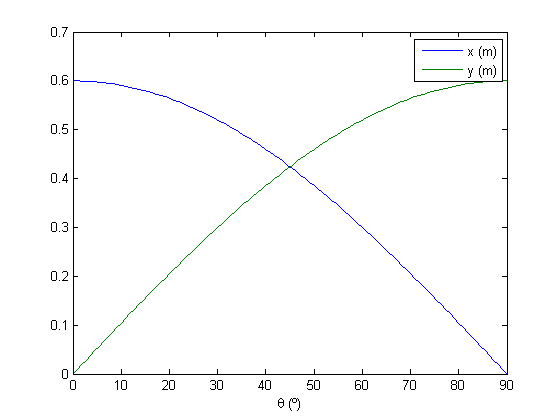

Contents
- Projeto ES664
- Parâmetros do motor
- Constante do motor
- Funções de transferência do motor
- Projeto controlador da malha de corrente
- Projeto controlador da malha de velocidade
- Modelo cinemático direto do manipulador
- Modelo cinemático inverso do manipulador
- Modelo dinâmico do manipulador
- Curvas de resposta do robô
- Validação do projeto
Projeto ES664
clear all
Parâmetros do motor
Ra = 2.58;
La = 28e-3;
J = 2.22e-2;
B = 2.95e-3;
Vs = 240;
Ftri = 1e3; % frequência da portadora triangular
Constante do motor
Das equações do motor em regime permanente:
Com , , , , , obtém-se :
wmn = 1750 * 2 * pi / 60; % velocidade nominal (rad/s) Temn = B * wmn; % torque eletromecânico para manter a velocidade nominal k = roots([wmn -Vs Ra*Temn]) k = k(1); Pn = 5 * 745.7; % potência nominal (W) Tmax = Pn/wmn;
k =
1.3038
0.0058
Funções de transferência do motor
s = tf('s');
Vt_wm = minreal(feedback(1/(Ra+s*La) * k * 1/(B+s*J), k));
Ia_wm = minreal(k * 1/(B+s*J));
Vt_Ia = minreal(Vt_wm/Ia_wm);
D_Vt = Vs;
Projeto controlador da malha de corrente
GIa = D_Vt * Vt_Ia; zpk(GIa) CIa = pid(30, 100) Iar_Ia = minreal(feedback(CIa * GIa, 1));
ans =
8571.4 (s+0.1329)
---------------------
(s^2 + 92.28s + 2747)
Continuous-time zero/pole/gain model.
CIa =
1
Kp + Ki * ---
s
with Kp = 30, Ki = 100
Continuous-time PI controller in parallel form.
Projeto controlador da malha de velocidade
Temr_Iar = 1/k; Gwm = minreal(Temr_Iar * Iar_Ia * Ia_wm); zpk(Gwm) Cwm = pid(1, 0.1) wmr_wm = minreal(feedback(Cwm * Gwm, 1));
ans =
1.1583e07 (s+3.333)
---------------------------------
(s+2.572e05) (s+3.343) (s+0.1324)
Continuous-time zero/pole/gain model.
Cwm =
1
Kp + Ki * ---
s
with Kp = 1, Ki = 0.1
Continuous-time PI controller in parallel form.
Modelo cinemático direto do manipulador
m = 4; d = 0.6; thetamin = 0; thetamax = 90; f = @(theta)[d*cos(theta/180*pi); d*sin(theta/180*pi)]; thetas = linspace(thetamin, thetamax); xys = f(thetas); plot(thetas, xys); legend('x (m)', 'y (m)'); xlabel('\theta (º)'); snapnow; plot(xys(1, :), xys(2, :)); xlabel('x (m)'); ylabel('y (m)'); snapnow;
Modelo cinemático inverso do manipulador
f1 = @(x, y)180*atan(y./x)/pi;
Modelo dinâmico do manipulador
g = 9.81; I = m*d*d/3; tau = @(theta,thetapp)d/2*cos(theta/180*pi)*m*g + I*thetapp/180*pi;
Curvas de resposta do robô
[theta, thetap, thetapp, t] = trapezio(thetamin, thetamax, 10); subplot(2, 1, 1); plot(t, theta, 'k'); ylabel('\theta (º)'); xlabel('Tempo (s)'); subplot(2, 1, 2); plot(t, thetap, 'k', t, tau(theta, thetapp), 'k--'); legend('\theta ponto (º/s)', '\tau (Nm)'); xlabel('Tempo (s)'); snapnow; [theta, thetap, thetapp, t] = trapezio(thetamin, thetamax, 5); subplot(2, 1, 1); plot(t, theta, 'k'); ylabel('\theta (º)'); xlabel('Tempo (s)'); subplot(2, 1, 2); plot(t, thetap, 'k', t, tau(theta, thetapp), 'k--'); legend('\theta ponto (º/s)', '\tau (Nm)'); xlabel('Tempo (s)'); snapnow; [theta, thetap, thetapp, t] = trapezio(thetamin, thetamax, 1); subplot(2, 1, 1); plot(t, theta, 'k'); ylabel('\theta (º)'); xlabel('Tempo (s)'); subplot(2, 1, 2); plot(t, thetap, 'k', t, tau(theta, thetapp), 'k--'); legend('\theta ponto (º/s)', '\tau (Nm)'); xlabel('Tempo (s)'); snapnow;

Validação do projeto
Deslocamento de 0 a 90º em 10s
[~, thetap, ~, t] = trapezio(0, 90/180*pi, 10); simin = [t' thetap']; out = sim('projeto', 'StopTime', '10'); plotScope(out.get('simout1'), {'x (m)', 'y (m)', {'\theta^{*} (rad)', '\theta (rad)'}}); snapnow; plotScope(out.get('simout2'), {{'\omega^{*}_m (rad/s)', '\omega_m (rad/s)'}, '\tau (Nm)', 'T_{em} (Nm)'}); snapnow; plotScope(out.get('simout3'), {'V_a (V)', 'I_a (A)', 'Duty Cycle'}); snapnow;
Deslocamento de 0 a 70º em 5s, seguido de retorno a 30º em 5s
[~, thetap, ~, t] = trapezio(0, 70/180*pi, 5); [~, thetap2, ~, t2] = trapezio(70/180*pi, 30/180*pi, 5); simin = [[t 5+t2]' [thetap thetap2]']; out = sim('projeto', 'StopTime', '10'); plotScope(out.get('simout1'), {'x (m)', 'y (m)', {'\theta^{*} (rad)', '\theta (rad)'}}); snapnow; plotScope(out.get('simout2'), {{'\omega^{*}_m (rad/s)', '\omega_m (rad/s)'}, '\tau (Nm)', 'T_{em} (Nm)'}); snapnow; plotScope(out.get('simout3'), {'V_a (V)', 'I_a (A)', 'Duty Cycle'}); snapnow;
Deslocamento de 0 a 90° com incrementos de 10°, mantendo a ferramenta estacionária em cada posição por 2s
[~, thetap, ~, t] = trapezio(0, 10/180*pi, 1); t2 = linspace(1, 3); thetap2 = zeros(1, numel(t2)); t3 = [t t2]; thetap3 = [thetap thetap2]; simin = [[t3 3+t3 6+t3 9+t3 12+t3 15+t3 18+t3 21+t3 24+t3]' [thetap3 thetap3 thetap3 thetap3 thetap3 thetap3 thetap3 thetap3 thetap3]']; out = sim('projeto', 'StopTime', '27'); plotScope(out.get('simout1'), {'x (m)', 'y (m)', {'\theta^{*} (rad)', '\theta (rad)'}}); snapnow; plotScope(out.get('simout2'), {{'\omega^{*}_m (rad/s)', '\omega_m (rad/s)'}, '\tau (Nm)', 'T_{em} (Nm)'}); snapnow; plotScope(out.get('simout3'), {'V_a (V)', 'I_a (A)', 'Duty Cycle'}); snapnow;